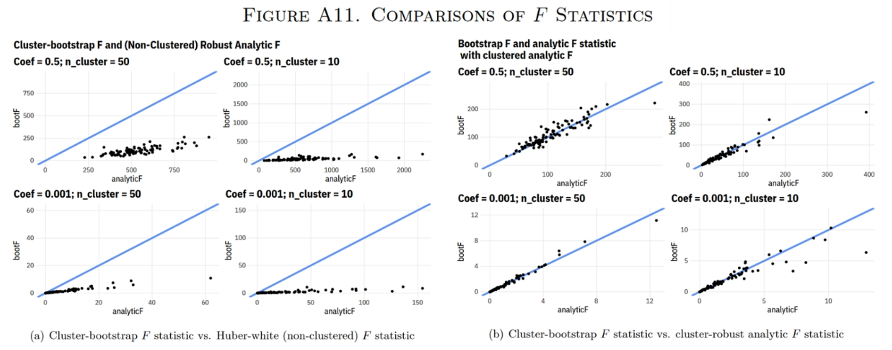
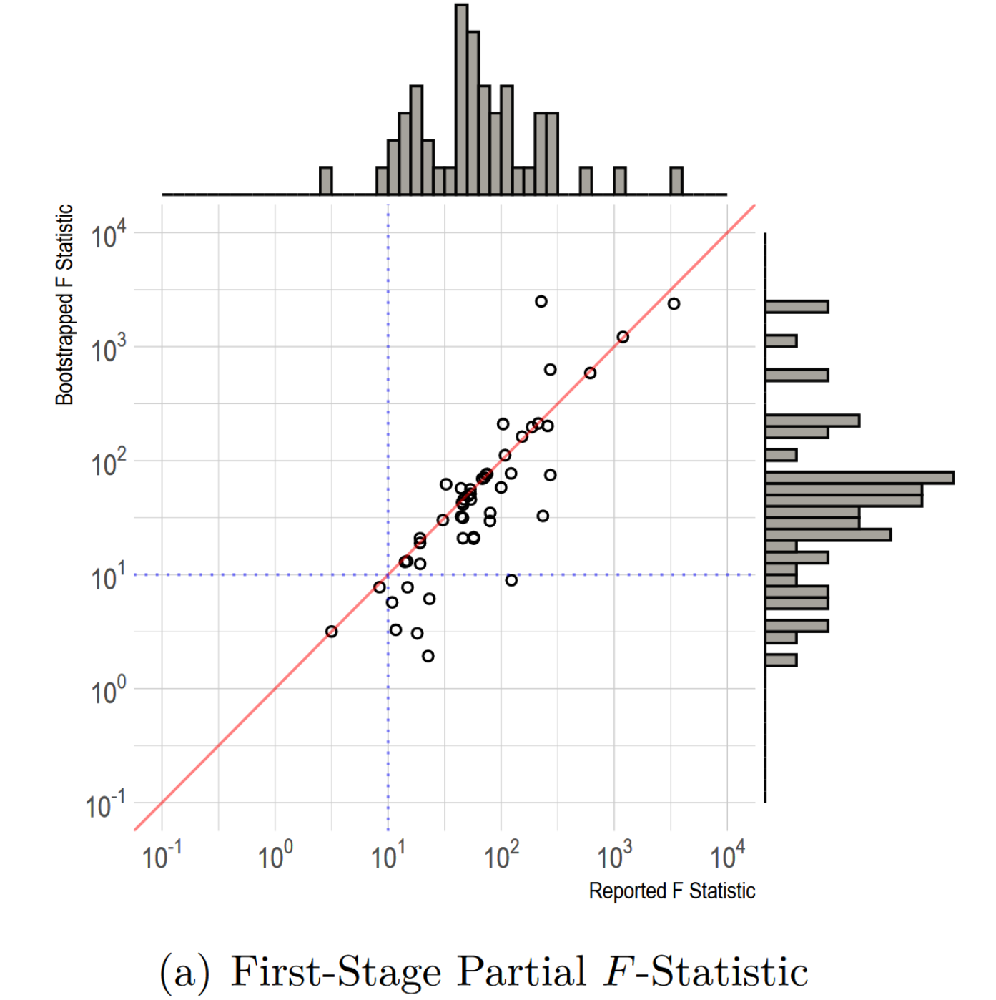
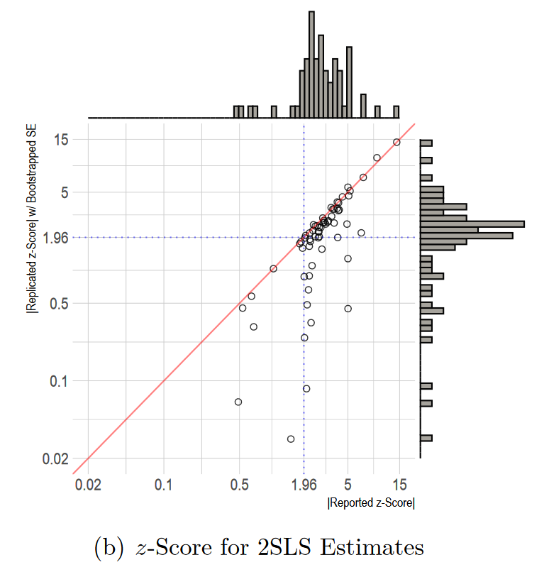
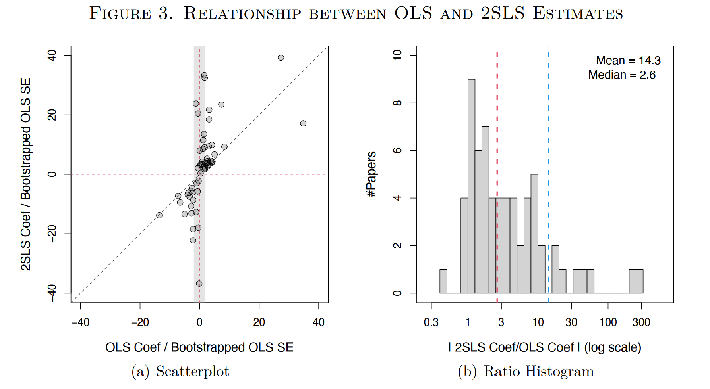
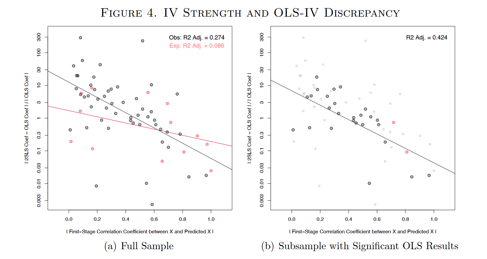
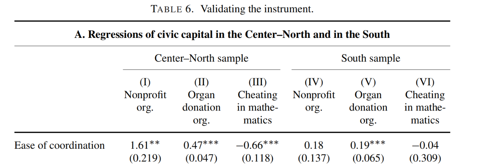
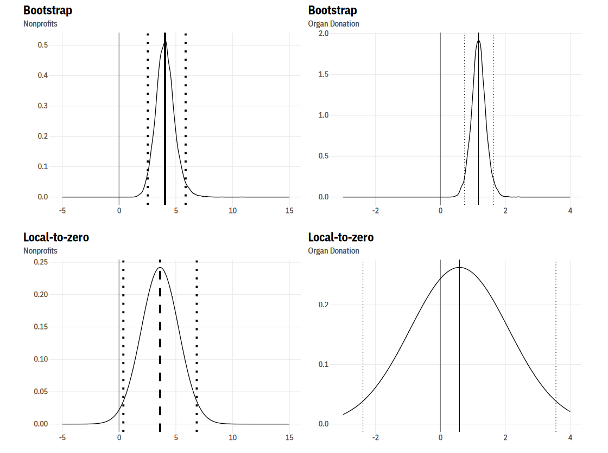

我们能在多大程度上相信工具变量估计的结果？
2022-06-15
Paper: Lal, Apoorva and Lockhart, Mackenzie William and Xu, Yiqing and Zu, Ziwen, "How Much Should We Trust Instrumental Variable Estimates in Political Science? Practical Advice based on Over 60 Replicated Studies," Working Paper (SSRN), 2021.
I had the honor of presenting this paper at the China's Economic Transition Workshop on March 23, 2022.
This article can also be found here: https://mp.weixin.qq.com/s/d4rej1a29-OyRIrXhtLBng
一、问题的提出
工具变量估计是实证研究中缓解内生性问题的重要方法，随着工具变量方法的广泛运用，学界越来越关心工具变量的有效性与使用过程中的严谨性。已经有一些学者指出，利用IV估计得到的因果效应往往要比OLS大很多。然而，这并不是因为内生性通常使得OLS低估因果效应。正如姜纬老师在2017年发表的文章“Have Instrumental Variables Brought Us Closer to the Truth”中所指出的，在金融领域中，有大约70%的文章的内生性是使得OLS高估因果效应的。此时，如果IV估计得到的是真实的因果效应，那么理应小于OLS的估计结果。正因如此，当我们发现绝大部分的文章的IV估计结果大于OLS时，我们就必须要怀疑这些IV估计的可靠性了。
在本推文所介绍的文章中，作者考察了政治学领域中使用工具变量方法的文章，发现了同样的问题。作者强调，这一现象的出现并非客观原因，而是部分研究者在使用工具变量方法时不够谨慎，比如没有汇报2SLS中第一阶段的F统计量、没有选用合适的标准误、使用弱工具变量进行估计等。这些做法导致了一个不好的后果：在工具变量排他性约束不完全满足的情况下，弱工具变量放大了IV估计的偏误，甚至比OLS的偏误还要更大。随后，作者推荐了一个间接检验工具变量排他性约束的方法Zero-first-stage test，并且推荐了一种在排他性约束不完全满足时的修正方法。
二、工具变量方法的简要回顾及其潜在陷阱
这一部分将简要回顾工具变量方法，并尝试在理论上寻找可能导致IV估计结果比OLS估计结果大很多的原因。假设考察$x$对$y$的因果效应，$z$是$x$的工具变量，则有： $$\text{Structural equation: } y_i=\alpha + \beta x_i+\varepsilon_i \tag{1}$$ $$\text{First-stage equation: } x_i = \pi_0 + \pi_1 z_i + \nu_i \tag{2}$$ $$\text{Reduced-form: } y_i=\underbrace{(\alpha+\beta\pi_0)}_{\gamma_0}+\underbrace{(\beta\pi_1)}_{\gamma_1}z_i+(\beta\nu_i+\varepsilon_i) \tag{3}$$ 在单变量的情形下，2SLS估计量(由于原文主要讨论通过2SLS方法得到的IV估计量，为方便表述，推文中混用了这两个概念，以下均称为IV估计量)的表达时为式(4)，这一表达式也等价于$\hat{\gamma}_1^{OLS}/\hat{\pi}_1^{OLS}$。 $$\hat{\beta}^{IV}=\frac{\sum_i(z_i-\bar{z})y_i}{\sum_i(z_i-\bar{z})x_i} \tag{4}$$ 在大样本情形下，这一估计量依概率收敛于式(5)。 $$\hat{\beta}^{IV}=\frac{\sum_i(z_i-\bar{z})y_i}{\sum_i(z_i-\bar{z})x_i}=\frac{\sum_i(z_i-\bar{z})(\alpha+\beta x_i+\varepsilon_i)}{\sum_i(z_i-\bar{z})x_i}=\beta+\frac{\sum_i(z_i-\bar{z})\varepsilon_i}{\sum_i(z_i-\bar{z})x_i}\to_p\beta+\frac{cov(z_i,\varepsilon_i)}{cov(z_i,x_i)} \tag{5}$$ 这就自然而然地引出了对工具变量的两个重要假设：
- 相关性，即要求$cov(z_i, x_i)\neq 0$，也就是要求工具变量与内生变量存在相关性，根据相关性的强弱可以将工具变量分为强工具变量与弱工具变量
- 排他性，即要求$cov(z_i,\varepsilon_i) = 0$，换句话说，除了通过影响$x$进而影响$y$，变量$z$不可以再通过其他渠道对$y$产生影响。当这两个假设满足的时候，$\hat{\beta}^{IV}$是对$\beta$的一致估计。
根据是否满足两个前提假设，可以将工具变量估计分为四种情形，除去完美符合两个假设的情形，还余下三种可能导致偏误的情形。
情形一：工具变量满足排他性，但相关性较弱。在这种情况下，$\hat{\beta}^{IV}$依然是$\beta$的一致估计，但是相关性较弱会导致IV估计量变得不精确(imprecision)。这是因为存在以下关系： $$var[\hat{\beta}^{IV}]=var[\hat{\beta}^{OLS}]/R_{xz}^2 \tag{6}$$ 如果工具变量相关性较弱，第一阶段回归的$R^2$就会很小(上式分母很小)，$\hat{\beta}^{IV}$的标准误就要比$\hat{\beta}^{OLS}$大很多；而且，由于$\hat{\beta}^{IV} = \hat{\gamma}_1 / \hat{\pi}_1$，当$\pi_1\approx 0$时，IV估计量的渐进正态性会难以满足。另外，在弱工具变量的情形下，IV估计量的有限样本性质并不优秀，因为IV估计量是有偏的，可以证明(请参考Mostly Harmless Econometrics，本推文介绍的原文中分母处似乎有误，这里有所修改)： $$E[\hat{\beta}^{IV}-\beta]\approx\frac{\sigma_{\nu\varepsilon}}{\sigma_\nu^2}\cdot\frac1{F+1} \tag{7}$$ 其中$F$代表第一阶段的F统计量。如果$\pi_1 \approx 0$，则$\nu \approx x$且$F \approx 0$，此时$E[\hat{\beta}^{IV}-\beta]\approx\sigma_{x\varepsilon}/\sigma_{x}^{2}=E[\hat{\beta}^{OLS}-\beta]$。也就是说，当工具变量非常弱的时候，IV估计量的期望值与真实值的偏差与OLS估计量由于内生性而导致的偏差是相近的。关于工具变量强弱，有一些判断的经验法则，比如第一阶段F统计量大于10。当然，近期有研究指出，只有当第一阶段F统计量大于等于104.7的时候，传统的t检验才能照常使用(Lee et al., 2020)。
余下两种情形涉及工具变量的排他性约束不满足的情况。在这种情况下，$\hat{\beta}^{IV}\nrightarrow_p\beta $，此时IV估计的结果与真实值也存在偏差，如式(8)所示，我们将这一偏差定义为$Bias^{IV}$。 $$\hat{\beta}^{IV}\to_p\beta+\frac{cov(z_i,\varepsilon_i)}{\underbrace{cov(z_i,x_i)}_{Bias^{IV}}} \tag{8}$$ 同理，我们也可以定义出OLS估计中由于内生性而导致的估计偏差$Bias^{OLS}$，如式(9)。 $$\hat{\beta}^{OLS}\to_p\beta+\underbrace{\frac{cov(x_i,\varepsilon_i)}{var(x_i)}}_{Bias^{OLS}} \tag{9}$$ 通过一系列等价变换，可以推导出$Bias^{IV}$和$Bias^{OLS}$之间的数量关系，式(10)中$\rho$代表相关系数： $$Bias^{IV}=Bias^{OLS}\cdot\frac{\rho(z_i,\varepsilon_i)}{\rho(x_i,\varepsilon_i)}\cdot\frac1{\rho(z_i,x_i)} \tag{10}$$ 虽然$\rho(z_i,\varepsilon_i ) \neq 0$，但是$\rho(z_i, \varepsilon_i ) < \rho(x_i, \varepsilon_i)$往往是满足的，因此当排他性约束不满足的时候，工具变量的强弱决定了OLS估计与IV估计的偏误何者更大。于是有：
情形二：工具变量不满足排他性，但相关性较强。此时，虽然IV估计量是不一致的，但是偏差相比起OLS更小，IV估计量依然比OLS更接近真实值。
情形三：工具变量不满足排他性，而且相关性较弱。在这种情况下，IV估计的偏误甚至比OLS的偏误还要大。而且大多数情况下，$\rho(z_i, \varepsilon_i)$和$\rho(x_i, \varepsilon_i)$的符号是相同的，这就有可能导致前文提到的现象出现：尽管在某些研究中内生性的存在是使得OLS高估因果效应的，但IV的估计结果比OLS的估计结果还要大得多。
三、现有研究中使用工具变量的问题
在原文中，作者考察了2010年至2020年6月发表在政治学三大顶级期刊上(APSR、AJPS和JOP)使用了工具变量方法的文章。满足作者的筛选标准的文章一共有115篇，其中有61篇文章的结果能够实现复现；由于有3篇文章分别有两个不同的IV估计，因此最终一共有64个IV估计结果。作者在原文中将其归纳为4种不同的IV类型(Theory、Experiment、Rules & policy changes、Econometrics)，读者可以进一步参考原文，推文中不再详述。
(一)第一阶段F统计量
作者首先考察了这64个IV估计的第一阶段F统计量。作者利用对应的数据集重新估计了基于Bootstrap标准误的F统计量(如果数据可以聚类，则使用聚类的Bootstrap标准误)，并将其与原文中汇报的F统计量进行对比。之所以用基于Bootstrap标准误的F统计量作为参照，是因为它更加保守(也就是更小)。原文的附录展示了基于蒙特卡洛模拟得到的一组结论(Figure A11)：与其他F统计量对比，基于Bootstrap标准误的F统计量往往更小；当数据需要进行聚类而未采用聚类标准误时，得到的F统计量会大大高估工具变量的强度。

作者发现，在64个IV估计中，有14个(22%)没有汇报第一阶段的F统计量(不过作者这里可能夸大了这一问题的危害，因为似乎在这14篇文章中，很多文章重估得到的F统计量是很大的)，以及有10个使用了经典的渐进标准误(即未考虑异方差或组内相关)。下图展示出了作者重估的F统计量与原文汇报的F统计量之间的关系：在这50个汇报了第一阶段F统计量的结果中，有35个(70%)汇报的F统计量大于作者重估的基于Bootstrap标准误的F统计量。如果根据$F > 10$的经验法则，则有12个IV估计的重估F统计量不符合要求；然而，这12个估计结果中，3个没有汇报F统计量，7个使用了更加宽松的标准误而使得F统计量大于10。而如果使用更加严格的标准($F \geq 104.7$)，那么只剩20个(31%)IV估计符合要求了。另外，作者指出基于随机实验得到的工具变量(F统计量中位数为122.5)往往比其他类型的工具变量更强(F统计量中位数为41.2)。
综上，根据作者对第一阶段F统计量的考察，可以总结出三个问题：第一，部分研究者不汇报F统计量；第二，部分研究者使用的F统计量并不恰当，尤其是在应当聚类的情况下使用了未考虑组内相关的标准误；第三，除了由随机实验得到的工具变量，其他类型的工具变量的强度不尽人意。

(二)第二阶段z-score
接下来，作者考察了64个IV估计中核心估计系数的z-score，并同样使用了Bootstrap标准误进行了重估： $$z = \hat{\beta}^{2SLS} / \widehat{SE}\left(\hat{\beta}^{2SLS}\right)$$ 下图展示了原文汇报的z-score和作者重估的z-score之间的关系，可以发现，现有研究中出现了较为明显的p值操控(p-hacking)，汇报的z-score集中在1.96**附近。而且图中绝大多数的点都位于45度线右下方，说明汇报的z-score大于由Bootstrap标准误得到的z-score。作者在原文中指出，那些偏离较大的点主要是使用了渐进标准误，导致明显高估了系数的显著性。根据重估的z-score，如果以5%的显著性水平为标准，那么不显著的系数由9个增加到26个(41%)。而且，Lee et al.(2020)指出，如果仅仅以$F \geq 10$作为强工具变量的标准，那么z-score要大于3.43才能达到5%的显著性；如果依据3.43的标准，则仅仅剩下14个估计结果依然显著了。
对于z-score的考察反映出两个问题：第一，部分研究使用的标准误不够恰当，尤其是有的使用了渐进标准误，导致高估了核心变量系数的显著性；第二，作者指出，有些研究在工具变量相关性并不强的情况下，也并没有尝试一些专门为弱工具变量设计的检验(比如Anderson-Rubin test等等)。

(三)比较OLS和2SLS的估计系数
在这一部分中，作者开始重点比较IV的估计结果与OLS的估计结果之间的大小关系。Figure 3的(a)图呈现出了明显的规律：IV和OLS得到的估计系数的符号基本上是一致的(60个估计结果满足，占比94%)，而且IV估计得到的系数绝对值基本都比OLS的大(59个结果满足，占比92%)。因此，在其他学科的文献中普遍出现的现象，在政治学领域也出现了。作者在(b)图中绘制了两个系数估计值的相对大小的分布图，IV估计得到的系数平均是OLS估计的14.3倍，中位数是2.6倍。

在前文的理论分析中，我们提出了一种可能的解释：当工具变量的排他性约束不完全满足时，弱工具变量放大了IV估计的偏误，使得IV估计的偏误甚至比OLS的还要大。为了检验这种可能性，作者构造了以下的数量关系(原文的推导似乎存在笔误，推文中进行了一些调整；另外，为了保持与推文前文一致，这里使用了符号$\hat{\beta}^{IV}$和$Bias^{IV}$，原文中使用的符号是$\hat{\beta}^{2SLS}$和$Bias^{2SLS}$)： $$\left|\frac{\hat{\beta}^{IV}-\hat{\beta}^{OLS}}{\hat{\beta}^{OLS}}\right|\to_p\left|\frac{Bias^{IV}-Bias^{OLS}}{\beta+Bias^{OLS}}\right|\leq\left|\frac{Bias^{IV}}{Bias^{OLS}}\right|=\left|\frac{\rho(z_i,\varepsilon_i)}{\rho(x_i,\varepsilon_i)}\right|\cdot\frac1{|\rho(x_i,\hat{x}_i)|} \tag{11}$$ 从第二项到第三项的放缩基于三个较为合理的假设：第一，$\beta$和$Bias^{OLS}$的符号相同，换句话说，内生性的存在使得OLS高估了因果效应，这一假设与大多数文章的情况是一致的；第二，$Bias^{IV}$与$Bias^{OLS}$符号相同，如果忽略$\nu_i$与$\varepsilon_i$的相关性，那么由式(10)，这一条件显然是满足的；第三，$Bias^{IV}$比$Bias^{OLS}$要大，在第一个假设满足的情况下，由于观察到IV估计的系数绝对值通常比OLS要大，则说明了第三个假设是满足的。根据式(11)，作者为IV估计与OLS估计的系数差异确定了一个上界，如果排他约束不满足(即$\rho(z_i, \varepsilon_i )\neq 0$)，随着工具变量的相关性增加(也就是$\rho(x_i,\hat{x}_i)$增加)，这一上界不断减少，此时$|\hat{\beta}^{IV}-\hat{\beta}^{OLS}/\hat{\beta}^{OLS}|$与$|\rho(x_i,\hat{x}_i)|$可能呈现出负相关的关系。作者指出，如果我们观察到两者的负相关关系，则可能说明排他性约束是不完全满足的，而在作者考察的64个IV估计中，正好观察到了显著的负相关关系(Figure 4)，尤其是在使用并非基于随机实验的IV的研究中尤其明显，$R^2$达到了0.274。图(b)中，作者仅保留了那些OLS的估计结果显著的研究，在这些研究中，OLS估计已经说明了作者的主要结论，IV估计通常是作为一种补充检验。此时，R2提高到了0.424，这反映出在这些研究中，研究者对IV的选择更加不严谨、不保守。

作者提出，有三类竞争性假说也可能导致IV的估计结果明显大于OLS，分别是：异质处理效应、发表偏误、以及认为内生性的存在使OLS低估。最后一点前文已经解释，这里不再赘述。异质处理效应指的是，IV估计的结果是局部平均处理效应(LATE)，如果compliers存在明显的异质性，那么也可能导致IV的估计结果更大。发表偏误与$\hat{\beta}^{IV}$的标准误有关，在理论回顾部分，我们指出$\hat{\beta}^{IV}$的标准误要比$\hat{\beta}^{OLS}$的更大，当工具变量较弱时，$\hat{\beta}^{IV}$的标准误会很大，只有当系数的点估计值也很大的时候，核心变量才能显著；由于论文发表倾向于显著的估计结果，因此几乎只有那些$\hat{\beta}^{IV}$很大的估计结果才有机会见刊。
在附录中，作者使用蒙特卡洛模拟构建了一系列体现异质处理效应与发表偏误的数据生成过程，在模拟数据中，虽然$|\hat{\beta}^{IV}-\hat{\beta}^{OLS}/\hat{\beta}^{OLS}|$与$|\rho(x_i,\hat{x}_i)|$也呈现出负相关的关系，但是这一负相关关系明显弱于从现有文献的64个IV估计中发现的负相关关系。这表明，异质处理效应与发表偏误并不能完全解释。
综合上述的所有发现，作者对IV估计的因果效应明显大于OLS这一现象提供了一个有明确证据支持的解释：在大多数研究中，工具变量的排他性约束是不满足的；然而在这种情况下，部分研究者由于选择了不恰当的标准误而高估了工具变量的相关性，使用了弱工具变量对因果效应进行估计，这反而放大了排他性约束不满足而导致的不一致性，最终使得IV估计量比OLS估计量的偏误还要大。
四、如何更好地判断工具变量的有效性？
(一)Zero-first-stage test
工具变量的有效性取决于两个假设是否满足，其中相关性假设是可以检验的，因此主要依靠研究者更加严谨、甚至应当更加保守地处理。困难的事情在于，排他性约束是无法直接检验的。在原文中，作者推荐了一种安慰剂检验Zero-first-stage test (ZFS test)(Bound and Jaeger, 2000)，这一检验的核心思想在于：找到一个与研究群体在各方面类似的新群体，但这一新群体的$x$不受到工具变量$z$的影响(在LATE框架中，这一个新群体相当于是never-takers)；如果工具变量的排他性约束是满足的(也就是说，除了通过影响$x$进而影响$y$，变量$z$不会再通过其他渠道对$y$产生影响)，那么对于这一新群体，式(3)的回归结果中($z$对$y$的回归)$z$的系数就不应该显著。如果显著，则可以拒绝相信工具变量满足排他性约束；如果不显著，则为工具满足排他性约束提供了一些证据。
为了更好地说明ZFS test，作者在原文中以Guiso et al. (2016)的"Long-term persistence"一文进行了举例说明。这篇文章中考察的核心问题是：那些在中世纪实现自治(独立)($x$)的意大利城邦，在今天是否会拥有更高的社会资本($y$)？由于$x$存在内生性，Guiso等人找到了一个工具变量——该城邦在中世纪是否为主教所在地。为了说明这一工具变量的合理性，下面简单介绍一下当时的历史背景。公元1000年前，北意大利是罗马帝国的一部分，但之后罗马帝国走向衰弱、慢慢解体，导致在北意大利出现了一些独立的城邦。独立城邦出现的核心在于建立起了一种“誓约”：城邦的成员互相帮助、共同解决集体问题、共同抵御罗马帝国的王权等。因此，在历史上实现自治有利于提高今天的社会资本，这一命题是相当符合直觉的。另外，由于主教是誓约的担保人，因此作为主教所在地的城邦更有可能达成这种誓约。而南意大利则不同，在1061年至1091年间，诺曼王朝入侵了意大利南部，使得南意大利成为这一强大王朝的一部分；由于诺曼王朝强大的中央权力，南意大利并没有出现自由城邦。因此，南意大利的城邦正是前面提到的合适的新群体(never-takers)，因为无论一个城邦是否是主教所在地，该城邦都没有独立。在南意大利的样本中，工具变量不可能通过影响x进而影响y，所以如果工具变量排他性约束是满足的，在南意大利样本中，$z$对$y$的回归结果应当至少是不显著的。
Guiso等人在原文中进行了这一检验，Table 6展示了估计的结果(为节约篇幅，表格未展示完全，表中的解释变量Ease of coordination即为工具变量)，其中第(I)列到第(III)列是北意大利的城邦样本，第(IV)到第(VI)列是南意大利的城邦样本，被解释变量分别是三个指代社会资本的指标。可以发现，在北意大利的样本中，$z$对$y$产生了显著的影响：历史上是主教所在地的北意大利城邦，在今天有更高的慈善捐赠、器官捐赠，以及更少的考试作弊。而在南意大利城邦中，由于不存在独立城邦，因此$z$对$y$的影响是不显著的(除了第(V)列，原文中辩护道，这一列的估计系数要远远小于第(II)列，说明工具变量对排他性约束的违反并不严重)。
需要指出，这一安慰剂检验是否有效取决于一个假设：即北意大利城邦的各类变量与南意大利城邦的各类变量之间存在类似的因果关系。如果这一假设不满足，那么即使ZFS test支持工具变量对南意大利样本满足排他性约束，也难以外推到北意大利的样本之中。然而，这一假设是难以检验的，因此在一定程度上可以说，ZFS test只是把难以检验的排他性约束转化为了另一个难以检验的问题。读者还是需要依据自己所研究的对象的实际情况选择合适的检验方法。

(二)"Local to zero" correction
实际上，ZFS test不仅可以作为一种安慰剂检验，还能够通过与Local-to-zero correction方法相结合，修正部分不够外生的工具变量的估计结果。如果工具变量的排他性约束不满足，则在结构方程$Y = X\beta + Z \gamma +\varepsilon$中，$\gamma\neq 0$。Conley et al. (2012)已经证明，当$\gamma$服从某一分布$\mathbb{F}$的时候，2SLS估计量满足： $$\hat{\beta} \sim^a \mathcal{N}(\beta,\mathbb{V}_{2SLS})+\mathbf{A}\gamma\text{, where } \mathbf{A}\equiv(X^{\prime}Z(Z^{\prime}Z)^{-1}Z^{\prime}X)^{-1}X^{\prime}Z$$ 如果假设$\gamma$服从正态分布$\mathcal{N} (\mu_\gamma, \Omega_\gamma)$，则式(12)可以进一步简化为： $$\hat{\beta} \sim^a \mathcal{N}(\beta+\mathbf{A}\mu_\gamma,\mathbb{V}_{2SLS}+\mathbf{A}\Omega_{\gamma}\mathbf{A}^{\prime})$$
在ZFS test中，我们检验了never-takers样本中$z$对$y$的影响，对于这一群体而言，$z$不会对$x$产生影响，因此估计得到的系数$\hat{\gamma}^{ZFS}$可以作为$\gamma$的估计，此时将其纳入式(12)或式(13)的估计中，就可以得到对$\beta$的准确估计。
上述方法建立在“plausibly exogenous”方法(或称“Local to zero”方法)的基础上，在Stata中可以使用plausexog命令来实现(ssc install plausexog)。作者在推荐完这一处理方法之后，利用这一方法对Guiso et al. (2016)的结论重新进行估计，下图展示了估计的结果，图中标注出了系数点估计值及其95%置信区间(左边两个图对应前面Table 6的第(I)列，右边两个图对应第(II)列)。可以发现，在使用Local-to-zero方法之后，系数的点估计值有所下降，而且标准误进一步增大。在ZFS test中，第(V)列的估计结果在经济意义和统计意义上均是显著的，表明工具变量在这一估计中并不够外生，因此在右边的两个图中，使用Local-to-zero方法之后估计结果的变动非常明显，此时系数已经不再显著。

五、总结
最后，本推文将原文作者提出的九点建议与姜纬老师在“Have Instrumental Variables Brought Us Closer to the Truth”一文中提出的三大建议相结合，总结出以下十点使用工具变量方法时的注意事项，供读者参考：
- 在使用工具变量方法之前，想清楚潜在的内生性是会使得因果效应被高估还是低估。如果担心的是OLS低估因果效应，而OLS的估计结果已经是显著的了，那么可能没必要使用IV估计。另外，在正式使用IV估计之前，最好先对可能存在的偏误进行一定篇幅的讨论。
- 在研究设计的阶段，就要先想好选用的工具变量能不能对x产生一个(准)随机的冲击。正如Rubin所说，在因果推断中，研究设计比后续分析更重要(design trumps analysis)。
- 在跑完第一阶段回归之后，画图看看$x$和$\hat{x}$之间的关系(当然，这里是指排除了各种协变量和固定效应之后)，先目测一下工具变量的相关性。
- 利用Bootstrap标准误来计算第一阶段的F统计量，如果数据是可以聚类的，则应该使用聚类的Bootstrap标准误。如果第一阶段的F统计量很大(比如说$F≥104.7$)，那么就可以继续下去。另外，工具变量的相关性强弱要公开透明，不要只汇报一个$R^2$，因为$R^2$大可能是因为协变量。
- 使用Bootstrap方法来计算2SLS的标准误和置信区间，以及要进行一些在弱工具变量的情况下也比较稳健的检验，比如AR test
- 如果预计内生性的存在会使得OLS高估因果效应，而随后用IV估计得到的结果比OLS还要大，则必须要谨慎对待这一结论。
- 如果有充分的理由相信，处理效应对于compliers产生的效果比其他群体的大很多，那么请认真分析这一群体，并提供令人信服的解释。
- 由于never-takers是进行ZFS test的合适群体，所以如果能够找到这么一个群体，请进行安慰剂检验，尝试说明IV不会对这一群体的$y$产生影响。
- 在第8的基础上，利用ZFS test的估计结果，使用LTZ correction修正IV的估计值和置信区间，并与原来的估计结果进行对比。
- 在使用工具变量方法估计出$x$对$y$的因果效应之后，一定不要忘记思考系数的现实意义。无论系数在统计上多么严谨，如果不符合现实，那也需要再好好琢磨。